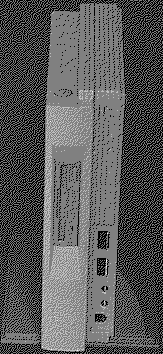

Previous
Next
TOC
Die Atari Microbox wurde von Atari zwar noch entwickelt und besitzt
neben einer mit 25 MHz getaktenen 68040 CPU noch drei Steckplätze
(einen für das Grafik- und einen für das Soundsystem), wurde aber
bereits während der vorproduktionsphase genauso eingestellt wie der
1040STE+ und kam daher nie in die Händlerregale.

Das Foto zeigt eine Microbox im Gehäuse während der Entwicklungsphase
Kapitel Die Atari Microbox, Seite 1